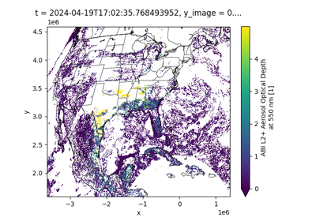

goesutils Example Gallery¶
This gallery houses examples on how to use goesutils to do various analyses. This includes downloading and visualizing the data.
To install for exmaples, run teh command below (use –user if not an admin):
python -m pip install --user git+https://github.com/barronh/goesutils.git pycno
In notebooks (e.g., on Google Colab), this can be done live with the command below (may require kernel restart):
%pip install --user git+https://github.com/barronh/goesutils.git pycno
To run an example in a notebook:
Copy the command above into a new cell and run it.
Click on example below to see code.
Copy the code from the example into a new cell and run it.
goesutils Basics¶
This section houses examples on how to interact with GOES.

Find and Retrieve Files w/ GUI
Find and Retrieve Files w/ GUI

goesutils Maps¶
This section houses examples on how to make maps.